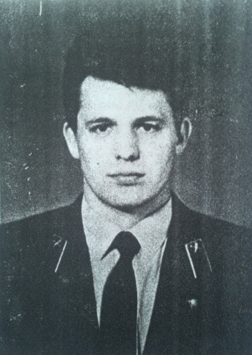
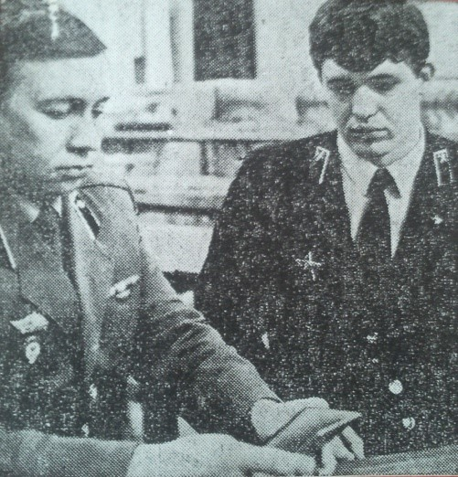
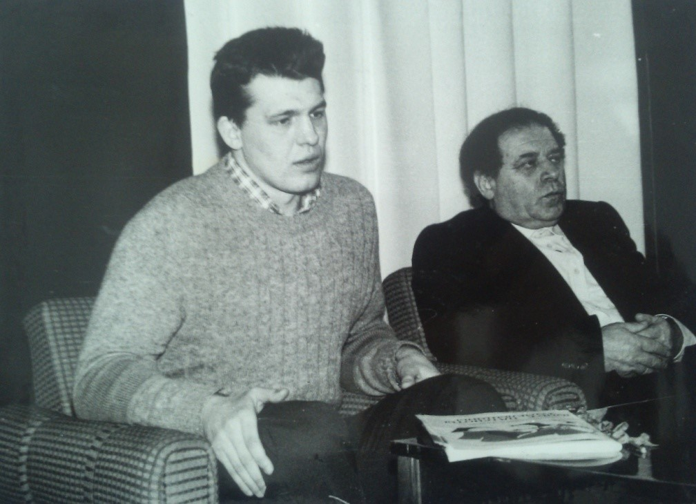

Гарус Юлий Григорьевич
Родился 11 сентября 1964 года, в городе Гомеле. Окончил 44 школу в 1981 году. 3 ноября 1983 года был призван в армию, а с 1984 по 1985 служил в Афганистане. Был награжден: знаком «Гвардия», «Отличник СА», «Орден Красной Звезды», знаком «За разминирования», медалью «За боевые заслуги» .
Орден Красной Звезды был вручен Юлию, когда он вернулся со службы в армии в Белорусский институт инженеров железнодорожного транспорта. Свежи в памяти присутствовавших тогда в зале студентов и преподавателей торжественные минуты, когда представитель горвоенкомата вручал Юлию боевой орден. Именные часы, цветы, искренние слова восхищения – всё в этот день было адресовано ему, выпускнику нашей школы, обычному парню как сотни и тысячи его ровесников
Биография укладывается в полстраницы: школа, год работы на производстве, поступление в институт, служба в рядах Советской Армии, снова учёба в институте, женитьба. Жизнь продолжается. Мирный труд и мирные заботы.
В памяти Юлия Гаруса много боевых эпизодов. Вот один из них:
«Бандитов ожидали ночью, но душманы появились раньше. Юлий и его товарищи, урывались в старом заброшенном кишлаке, открыли огонь. Перевес силы был на стороне банды. Нашим воинам пришлось по рации вызвать «вертушку» (так называли вертолёт) с подкреплением. Бандиты были разгромлены, но очень дорогой ценой: двое солдат были тяжело ранены, офицер убит».
Не сломила воинов душманская орда,
И небосвод над кишлаком тем снова чист.
Так было, есть и будет так всегда,
Пока в Афганистане воин-интернационалист
А вот второй эпизод:
«Группа, в которую входил Юлий, должна была заминировать дорогу. По ней должен был идти груз из Пакистана. Выехали на минирование. Неожиданно с двух сторон грянул огонь из гранатомётов. Юлий с товарищами открыли ответный огонь. В этом бою Юлия ранило. Как и когда-то в годы Великой Отечественной войны его из-под непрерывного огня с опасностью для жизни, вынес товарищ, доставил безопасное место, оказал первую помощь, и снова ринулся в бой. И в этот раз груз Пакистана не попал в руки врагов».
Из воспоминаний и выступления Гаруса Юлия
Вступив за хребет Гиндукуша, где солнце тускнело во мгле,
Бессмертною русскою душу пронес по Афганской земле.
Свинцовые трассы летели в его нежелезную грудь,
Отметив рубцами на теле к бессмертию пройденный путь,
Утихли со временем раны, но снова к рассвету спеша,
Дорогами Афганистана бессонницей бродит душа.
На встрече с поисковцами клуба «Искателе» и музея боевой и трудовой славы